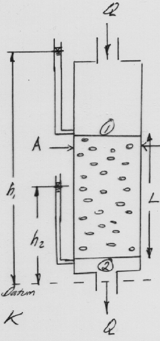

23. Groundwater Hydrology¶
Course Website
Readings¶
Gupta pp. 127-132
Videos¶
Outline¶
Aquifers
Material Properties
Darcy’s Law
Groundwater and Aquifers¶
Groundwater hydrology is the study of water beneath the surface of the Earth

Groundwater usually is found in porous media (not underground rivers). A porous medium is comprised of solid space and void or pore space. Liquids and gasses are found in the pore space, the solid matrix forms the physical structure of aquifers and other geologic formations of interest.

The ratio of total pore volume to bulk medium volume is the porosity.

Aquifers¶
An aquifer is an underground layer of water-bearing rock or sediment that stores and transmits groundwater. It is a critical resource for supplying fresh water to wells, springs, and natural ecosystems.
Store water (water bearing formations)
Transmit water (in economically useful quantities)
Aquifers are classified as confined, unconfined, and/or leaky (a single unit can exhibit all three classifications).
A confined aquifer draws its water from a geologic formation upper bounded by a layer that does not readily transmit water. Visualize a pipe filled with sand; the interior of the pipe will behave like a confined aquifer.

An unconfined aquifer draws its water from a geologic formation that is not upper bounded - the aquifer has the equivalent of a free surface. A bathtub filled with sand and water will behave like an unconfined aquifer.

A leaky aquifer is a hybrid of the two extremes, and there can be leakage between layers. Most real aquifers are somewhat leaky.

Material Properties¶
Porosity¶
Porosity is the ratio of total pore volume to bulk medium volume;
\(n = \frac{V_{pore}}{V_{total}}\)
Range in values is large for geologic materials

Specific Yield¶
A concept related to porosity is the specific yield \(S_y\) of a material.
\(S_y\) is the amount of water that will drain from a porous medium under the influence of gravity.
\(S_r\) is the amount of water left behind in the material and is called the specific retention.

The specific yield is important in water supply as it represents the amount of water that can drain to wells. Thus when making groundwater reservoir estimates the water in storage should be based on the specific yield and not porosity.
Two additional related terms are: water content and saturation.
Storativity¶
Storativity refers to the ability of a porous medium to store water within its bulk.
The mechanisms of storage are:
draining and filling of the pore space
compression/decompression of the water, and
compression/decompression of the solids.
In an unconfined aquifer the draining and filling of the pore space is the most significant mechanism.

\(S=\frac{V_{water}}{\Delta h A}\)
In a confined aquifer, the compression and decompression of the solids structure is the primary mechanism of storage.
\(S=\frac{V_{water}}{\Delta h A}\)
The formula is the same for either case, but the magnitude os \(S\) is different (by a lot!)
Storage per unit thickness of aquifer is called the specific storage.
Average Linear Velocity (in a porous media)¶
The discharge \(Q\) divided by cross sectional flow area \(A\) in a pipe or open channel is the velocity \(V\)
In groundwater, some of the area is solid, so the porosity enters the equation as:
\(V=\frac{Q}{nA}\)
The figure below illustrates the concept.
If the garbage cans are identical, the velocity of the free surface in the marble filled can is bigger.
Transmissivity, permeability, hydraulic conductivity
Hydraulic Gradient¶
Hydraulic gradient is change in head per unit distance and provides the driving force for groundwater to flow. It is the same concept as the slope of the EGL in pipe hydraulics.

Equation(s) of Motion¶
Darcy’s Law¶
Permeability refers to the ease which water can flow through a porous material under a specified gradient.
Consider the head loss equation for a pipe.
\(\Delta h = f\frac{L}{D}\frac{V^2}{2g}\)
Solve for \(V\)
\(V=\frac{2g D \Delta h}{V f L} \)
or
\(V = \frac{2g \cdot D}{f \cdot V} \frac{\Delta h}{L}\)
The right most term is the hydraulic gradient. Now multiply by the pipe cross sectional area:
\(Q = [\frac{2g \cdot D}{f \cdot V}] A \frac{\Delta h}{L}\)
The term in the square brackets is the inverse of the pipe permeability (dependent on \(V\), \(Re\), and \(k_s\))
Permeable materials offer little resistance, while impermeable materials offer a lot of resistance. In the pipe analog, large \(k_s\) would cause a large \(f\) for any \(Re\) maening that pipe has small permeability.
Darcy’s law was established experimentally 1856.

Total discharge through a filter, \(Q\), was proportional to:
Cross sectional area of flow, \(A\),
head loss \(h_1 − h_2\).
And \(Q\), was inversely proportional to:
the length of the filter column, \(L\).
The relationship is expressed as
\(Q \propto A\frac{h_1-h_2}{L}\)
The head loss can be expressed as \(\Delta h\) so the expression is
\(Q \propto A\frac{\Delta h}{L}\)
The constant of proportionality is called the hydraulic conductivity, \(K\) so Darcy’ law is
\(Q = KA\frac{\Delta h}{L}\)
If we examine the two flow models we observe the two models have the same structure:
Pipe:\(Q =[\frac{2g \cdot D}{f \cdot V}]A\frac{\Delta h}{L}\)
Filter:\(Q =KA\frac{\Delta h}{L}\)
So the Hydraulic conductivity plays the same role in the relationship between flow and head loss in filter flow as does the square bracket term in the pipe flow model.
Note
The pipe flow is non-linear, notice the square bracket contains \(V\) both explicitly, and in the friction factor by its dependence on Reynolds number.
The constant of proportionality is called the hydraulic conductivity. Permeability is sometimes used interchangeably. In reservoir engineering the permeability is related to K, but not numerically identical.
\(K = \frac{k \rho g}{\mu}\)